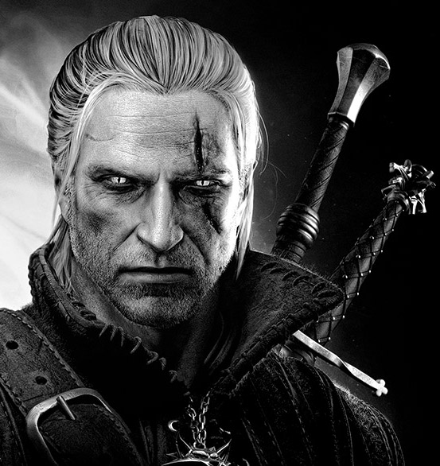

I am an outgoing and energetic (ask anybody) young
professional, seeking a career that fits my professional
skills, personality, and murderous tendencies. My squid-like
head is a masterful problem solver and inspires fear in who
gaze upon it. I can solve any problem and kill anything what
caused it. They say that there is something in my eyes.
Books
The Witcher Saga 1994-1999
Saga of Ciri, called Child Of Destiny by The Witcher's Right.
By this Right, claimed from one of The Kings by Gerald Of Rivia,
to become a Witcher. The Witchers Right is based on promise to
save the ones live, from exchenge for "The unexpected thing the
one discovers when returns home, but it wasn't there when the
one left".Books originally written in Polish. English
translation in progress.
The Witcher Stories 1992, 1992, 2008
The collection employs the frame story framework.
- The Sword of Destiny, 1992
- The Last Wish, 1993
- Something Ends, Something Begins, 2000
Games
Third-person role-playing video game developed by Polish
studio CD Projekt RED
for Microsoft Windows
and Xbox
360. It is a sequel to the 2007 video game The Witcher, and
was released internationally on May 17, 2011. Just like its
predecessor, the game is based on the book series of the same
name by Polish author Andrzej Sapkowski. The game has been a
critical and commercial success selling around 1 million units.
Studio website: http://thewitcher.com
Computer role-playing game based on Sapkowski's saga called The
Witcher was developed by CD
Projekt RED, and was released in Europe on October 26, and
the US on October 30. It was advertised far more than its
predecessor, and although it was one of CD Projekt's first
games, it was received very well by reviewers in both the EU and
the US. The game contains mature content.
Studio website: http://thewitcher.com
The Witcher: A Game of Imagination2001
Pen-and-paper role-playing game based on Andrzej Sapkowski's
Witcher series, written by Michał Marszalik, Maciej
Nowak-Kreyer, Michał Studniarek and Tomasz Kreczmar.
Famous Quotes
- "Power, sex. Sex, Power. They both come down to one thing - fucking others."
- "Only death ends a battle. Everything else only interrupts it."